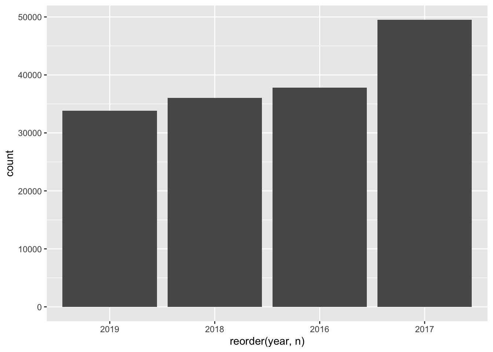
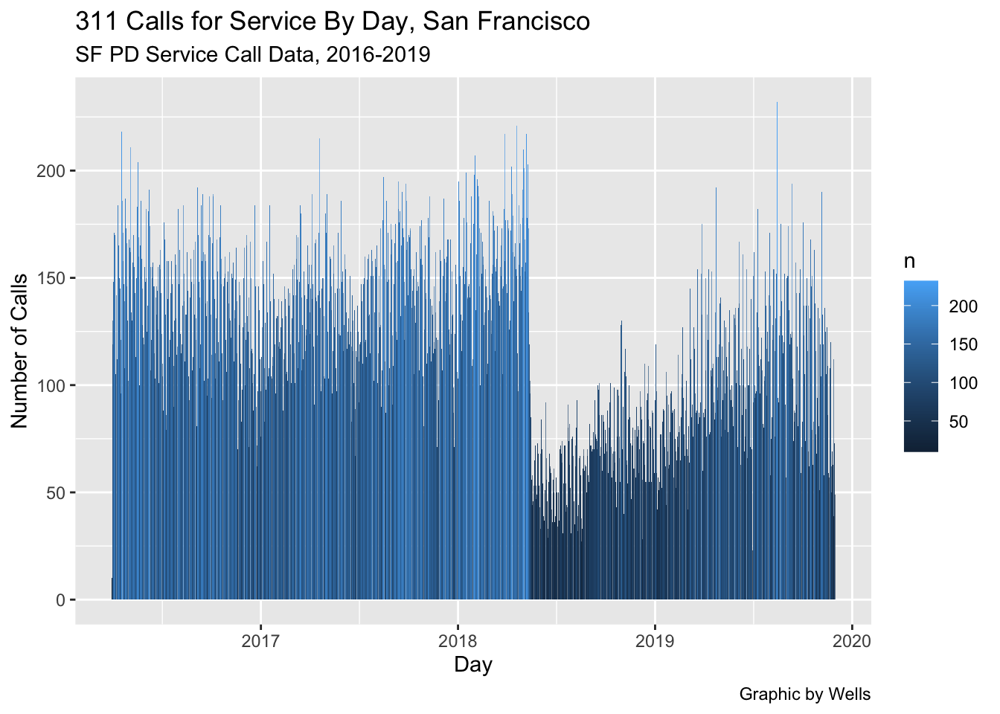

Before you launch into trying to chart or map your data, take a minute to think about the many roles that static and interactive graphic elements play in your journalism.
Sometimes, you can help yourself and your story by just creating a quick chart, which helps you see patterns in the data that wouldn’t otherwise surface. In the reporting phase, visualizations can:
Help you identify themes and questions for the rest of your reporting
Identify outliers – good stories, or perhaps errors, in your data
Help you find typical examples
Show you holes in your reporting
Visualizations also play multiple roles in publishing:
Illustrate a point made in a story in a more compelling way
Remove unnecessarily technical information from prose
Allow exploration, provide transparency about your reporting to readers
Visualizing data is becoming a much greater part of journalism. Large news organizations are creating graphics desks that create complex visuals with data to inform the public about important events. To do it well is a course on its own. And not every story needs a feat of programming and art.
Good news: one of the best libraries for visualizing data is in the tidyverse and it’s pretty simple to make simple charts quickly with just a little bit of code. It’s called ggplot2.
Let’s revisit some data we’ve used in the past and turn it into charts. First, let’s load libraries. When we load the tidyverse, we get ggplot2.
library(tidyverse)
Warning: package 'dplyr' was built under R version 4.2.3
Warning: package 'stringr' was built under R version 4.2.3
── Attaching core tidyverse packages ──────────────────────── tidyverse 2.0.0 ──
✔ dplyr 1.1.4 ✔ readr 2.1.4
✔ forcats 1.0.0 ✔ stringr 1.5.1
✔ ggplot2 3.4.2 ✔ tibble 3.2.1
✔ lubridate 1.9.3 ✔ tidyr 1.3.0
✔ purrr 1.0.2
── Conflicts ────────────────────────────────────────── tidyverse_conflicts() ──
✖ dplyr::filter() masks stats::filter()
✖ dplyr::lag() masks stats::lag()
ℹ Use the conflicted package (<http://conflicted.r-lib.org/>) to force all conflicts to become errors
16.0.2 311 Call Data
The dataset we’ll use involves the 311 calls for service to the San Francisco Police Department. The 311 calls are for general non-emergency issues ranging from blocked sidewalks to graffiti to homeless concerns. Details are here If you’re curious, here is the original dataset: 3,048,797 records
The imported data recognized the date as a character text, which means you cannot run an analysis to group by years, months or days. The code below did four things - 1: janitor::clean_names normalized the column names - 2: as.Date(SF$call_date) converted text into date fields - 3: lubridate::mdy(SF$call_date) converted the date into a format to extract the dates in detail using lubridate, an important software library for date analysis - 4: lubridate::year(SF$call_date2) extracted the year into a new column.
#This cleans column namesSF <- janitor::clean_names(SF)#This processes dates for analysisSF$call_date2 <-as.Date(SF$call_date)SF$call_date2 <- lubridate::mdy(SF$call_date)#This creates a new column for yearSF$year <- lubridate::year(SF$call_date2)
Check our data. Note that call_date2 is a <date> field.
The first kind of chart we’ll create is a simple bar chart.
It’s a chart designed to show differences between things – the magnitude of one thing, compared to the next thing, and the next, and the next.
So if we have thing, like a county, or a state, or a group name, and then a count of that group, we can make a bar chart.
So what does the chart the years of the 311 call data look like?
First, we’ll do a basic count of the years. There are just four years in the dataset, from 2016-2019. We built a simple table called years.
years <- SF %>%count(year) %>%group_by(year)years
# A tibble: 4 × 2
# Groups: year [4]
year n
<dbl> <int>
1 2016 37802
2 2017 49523
3 2018 36057
4 2019 33855
Now let’s create a bar chart using ggplot.
We need to tell ggplot what kind of chart to make.
In ggplot, we work with two key concepts called geometries (abbreivated frequently as geom) and asthetics (abbreviated as aes).
Geometries are the shape of the data: line charts, bar charts, scatterplots, histograms, pie charts, etc.
Asesthetics help ggplot know what component of our data to visualize – why we’ll visualize values from one column instead of another.
In a bar chart, we first pass in the data to the geometry, then set the aesthetic.
In the codeblock below, we’ve added a new function, geom_bar().
Using geom_bar() – as opposed to geom_line() – says we’re making a bar chart.
Inside of that function, the asthetic, aes, says which columns to use in drawing the chart.
We’re setting the values on the x axis (horizontal) to be the year. We set weight to n or the total calls per year, and it uses that value to “weight” or set the height of each bar.
One quirk here with ggplot.
After we’ve invoked the ggplot() function, you’ll notice we’re using a + symbol. It means the same thing as %>% – “and then do this”. It’s just a quirk of ggplot() that after you invoke the ggplot() function, you use + instead of %>%. It makes no sense to me either, just something to live with.
years %>%ggplot() +geom_bar(aes(x=year, weight=n))
This is a very basic chart. But it’s hard to derive much meaning from this chart. We can order the bars from highest to lowest by count of calls per year. We can fix that by using the reorder() function to do just that:
years %>%ggplot() +geom_bar(aes(x=reorder(year, n), weight=n))

This gives us another view of the data. But the bottom labels can be flipped if we wanted to avoid overlapping names. We can fix that by flipping it from a vertical bar chart (also called a column chart) to a horizontal one. coord_flip() does that for you.
years %>%ggplot() +geom_bar(aes(x=reorder(year, n), weight=n)) +coord_flip()
Notice how this clearly shows a trend about the decline in 311 calls per year.
We’re mainly going to use these charts to help us in reporting, so style isn’t that important.
We can pretty up these charts for publication with some more code. To style the chart, we can change or even modify the “theme”, a kind of skin that makes the chart look better.
Here I’m changing the theme slightly to remove the gray background with one of ggplot’s built in themes, theme_minimal()
years %>%ggplot() +geom_bar(aes(x=reorder(year, n), weight=n)) +coord_flip() +theme_minimal()
The ggplot universe is pretty big, and lots of people have made and released cool themes for you to use. Want to make your graphics look kind of like The Economist’s graphics? There’s a theme for that.
First, you have to install and load a package that contains lots of extra themes, called ggthemes.
#install.packages('ggthemes')library(ggthemes)
Warning: package 'ggthemes' was built under R version 4.2.3
And now we’ll apply the economist theme from that package with theme_economist()
years %>%ggplot() +geom_bar(aes(x=reorder(year, n), weight=n)) +coord_flip() +theme_minimal() +theme_economist()
Those axis titles are kind of a mess. Let’s change “count” on the x axis to “total 311 calls” and change “reorder(year, n)” to “year”. And while we’re at it, let’s add a basic title, “311 Calls for Service By Year, San Francisco” and a source as a caption. We’ll use a new function, labs(), which is short for labels.
years %>%ggplot() +geom_bar(aes(x=reorder(year, n), weight=n)) +coord_flip() +theme_minimal() +theme_economist() +labs(title="311 Calls, San Francisco",x ="total 311 calls",y ="year",caption ="source: SF PD Service Call Data, 2016-2019")
Not super pretty, but good enough to show an editor to help them understand the conclusions you reached with your data analysis.
With geom_text, we can add numbers to the bars
years %>%ggplot(aes(x=year, y=n, weight=n)) +coord_flip() +theme_economist() +geom_col()+geom_text(aes(label=n), hjust =-.1, size =2.5) +labs(title="311 Calls, San Francisco",x ="total 311 calls",y ="year",caption ="source: SF PD Service Call Data, 2016-2019")
16.1 Line charts
Let’s look at how to make another common chart type that will help you understand patterns in your data.
Line charts can show change over time. It works much the same as a bar chart, code wise, but instead of a weight, it uses a y. We’ll put the year on the x axis and count of loans, or n, on the y axis.
years %>%ggplot() +geom_line(aes(x=year, y=n))
It’s not super pretty, but there’s an obvious pattern, a bog peak in 2017.
Let’s build another table with some detail by day.
days %>%ggplot(aes(x = call_date2, y = n, fill = n)) +geom_bar(stat ="identity") +labs(title ="311 Calls for Service By Day, San Francisco", subtitle ="SF PD Service Call Data, 2016-2019",caption ="Graphic by Wells",y="Number of Calls",x="Day")

By charting this, we can quickly see a pattern that can help guide our reporting: why was there such a huge drop in mid-2018?
Let’s build a line chart for just a few variables based on year and disposition: Citations of people, Cancelled Calls and Admonished people on the scene.
dispo <- SF %>%filter(disposition ==c("CAN", "CIT", "ADM"))
Warning: There was 1 warning in `filter()`.
ℹ In argument: `disposition == c("CAN", "CIT", "ADM")`.
Caused by warning in `disposition == c("CAN", "CIT", "ADM")`:
! longer object length is not a multiple of shorter object length
With this dataframe, we will now use separate lines per column to graph the results
ggplot(dispo_pivot, aes(x=year)) +geom_line(aes(y=ADM), color ="blue") +geom_line(aes(y=CAN), color ="brown") +geom_line(aes(y=CIT), color ="green")
Or you can plot them with side-by-side columns. Use dispo and plot the columns by type of disposition. Each individual variable in disposition is assigned its own column and color. The years are plotted on the x axis.
ggplot(dispo, aes(year, n, fill = disposition)) +geom_col(position ="dodge")
We’re just scratching the surface of what ggplot can do, and chart types. There’s so much more you can do, so many other chart types you can make. But the basics we’ve shown here will get you started.
17 Pre-Lab Question 1
Which year had the most arrests? The arrest code is ARR. Create a new dataframe that filters for arrests and totals them by year. Call this arrest.
#your code here
Then create a bar chart that colors the bars by arrest total. Include a headline and caption
#your code here
18 Pre-Lab Question 2
What are the most common resolutions for 311 calls? Build a table called all_dispo that counts all of the dispositions Filter to the top 12 most common dispositions.
And here are the disposition codes, in case you’re curious: https://github.com/profrobwells/Guest_Lectures/blob/5c2d631aec862cd728ebf49d71143dbfcade3567/Intro_to_R_2022/Radio_Codes_2016.xlsx
# your code here
Create a bar chart of all_dispo and include a headline and caption
# your code here
NERD ZONE # Pre-Lab Question 3 Take the chart above, sort the bars in descending order
# your code here
The Calls for Service were filtered as follows: CONTAINS homeless, 915, 919, 920: Downloaded 157,237 records 3/31/16 to 11/30/2019. This is 5.1% of all calls in the broader database. File renamed to: SF_311.xlsx↩︎